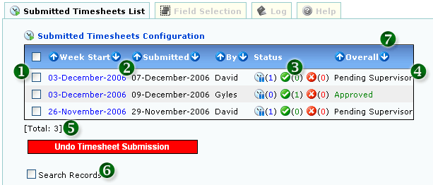

<table class="no-border" cellpadding=3 cellspacing=3>
<tr><td>
	<H1>1. List Timesheet-Submitted</H1>
	<pre align="left">     
	<strong>Figure 1: List Timesheet-Submitted</strong></pre>
	<ol>
		<li><strong>1. CHECK AND CLICK "UNDO TIMESHEET SUBMISSION" TO UNDO TIMESHEET</strong></li>
		<li><strong>2. CLICK LINK TO VIEW TIMESHEET</strong></li>
		<li><strong>3. DETAILED TIMESHEET STATUS</strong></li>
			<ol>
				<li> Pending</li>
				<li> Approved</li>
				<li> Rejected</li>
			</ol>
		<li><strong>4. OVERALL TIMESHEET STATUS</strong></li>
		<li><strong>5. LISTING MAX PAGE:</strong> Configurable in the User Preference section</li>
		<li><strong>6. CHECK TO SEARCH RECORDS</strong></li>
		<li><strong>7. SORTABLE FIELDS</strong></li>
	</ol>
</td></tr>
</table>